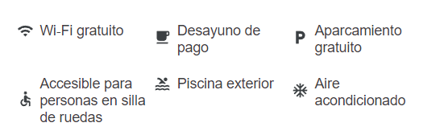

La búsqueda del hotel para familias ideal en Sao Paulo no tiene por qué ser difícil. Bienvenido a Novotel
Sao Paulo Morumbi, una fantástica opción para viajeros como tú.
Las habitaciones de los huéspedes ofrecen servicios como televisor de pantalla plana, minibar y aire
acondicionado, y los huéspedes pueden permanecer conectados con wifi gratuito que ofrece el hotel.
Novotel Sao Paulo tiene conserje y servicio de habitaciones para que la estancia sea más agradable. El
establecimiento también cuenta con piscina y bar. Si vas a en coche a Novotel Sao Paulo, hay
aparcamiento disponible.
S E R V I C I O S
